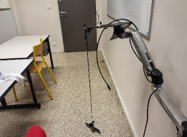
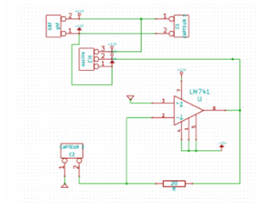
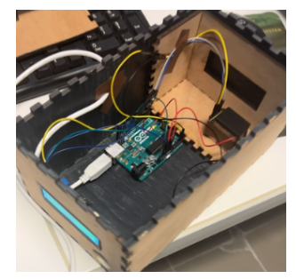
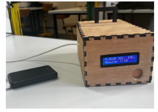
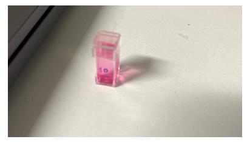

Je m'appelle Jules Balluais, étudiant en deuxième année de BUT Mesures Physiques à l'IUT de Blois.
J'ai réalisé de nombreux travaux pratiques autour de la physique, l'instrumentation et la métrologie. Ce portfolio présente une sélection de ces projets et les compétences développées.
Passionné par l'expérimentation et l'analyse de données, je cherche à mettre mes compétences en pratique dans un contexte professionnel stimulant.
Étude du mouvement d'un pendule simple via Phyphox. Modélisation par sinusoïde amortie et analyse des données gyroscopiques.
PhyphoxExcelMindviewGoogleDoc
Projet 02 · 1ère Année
Acoustique
Propagation des Ultrasons dans le vide
Étude de la propagation des ultrasons dans différents milieux. Analyse expérimentale des caractéristiques de transmission.
InstrumentationAcquisition de données
Projet 03 · 2ème Année
Chimie & Électronique
Concevoir un Spectromètre
Conception d'un spectromètre connecté pour le dosage des nitrites dans la Loire. Chaîne optique LED/TSL2591, loi de Beer-Lambert, programmation Arduino.
Arduino IDEExcelGoogleWordMindview
Projet 04 · Stage · 2026
Comet Traitements — Belgique
Machine IA de Reconnaissance des Métaux
Développement d'un protocole de préparation d'échantillons et d'un cahier des charges pour une machine IA de reconnaissance des métaux, en collaboration avec Eagle Vizion (Canada).
Eagle VizionMétrologieMachine LearningCahier des Charges
Projet 05 · Atelier
Radio Campus Tours
Projet Atelier Radio
Émission de 15 minutes en partenariat avec Radio Campus Tours 99.5. Scénarisation, argumentation contradictoire et passage en studio en conditions réelles.
Radio Campus ToursGoogleWordInstagram
04 — Compétences
Ce que je maîtrise
Mesures & Physique
Métrologie Avancé
Instrumentation Confirmé
Physique expérimentale Avancé
Traitement du signal Intermédiaire
Acquisition de données Confirmé
Logiciels & Outils
Excel Confirmé
Phyphox Confirmé
Rédaction de rapports Avancé
Mindview (Gantt) Intermédiaire
Python (bases) Débutant
Savoir-être
Rigueur scientifique Avancé
Travail en équipe Confirmé
Autonomie Confirmé
Anglais rédactionnel Intermédiaire
05 — Contact
Me retrouver
N'hésitez pas à me contacter pour toute question ou opportunité.
Merci de m'avoir contacté. Je vous répondrai dans les meilleurs délais.
Vos données ne sont pas conservées ni partagées
Projet 01 · 1ère Année · 2024–2025
Oscillation d'un Pendule
InstrumentationModélisationPhyphoxExcel
Animation d'un pendule oscillant (source : Wikimedia Commons)
Objectif
Étudier le mouvement d'un pendule simple en enregistrant les vitesses angulaires autour des trois axes à l'aide de l'application Phyphox
Analyser le comportement dynamique et traiter les données issues de plusieurs oscillations
Timeline du projet
Avril 2025
Étude théorique
Étude théorique d'une oscillation d'un pendule
Mai 2025
Création d'un Gantt
Planification du projet avec Mindview
Début Juin 2025
Prise de mesure (Test)
Expériences avec le pendule et Phyphox
Mi-Juin 2025
Exploitation des données
Traitement des données Phyphox dans Excel
Fin Juin 2025
Compte-rendu en anglais
Rédaction du rapport final sur Google Doc
Matériel utilisé
Tube en carton et ficelle (≥ 1 mètre)
Téléphone avec l'application Phyphox
Support pour suspendre le pendule

Montage expérimental — pendule avec téléphoneAxes du gyroscope (téléphone)
Logiciels utilisés
Phyphox
Acquisition des données gyroscopiques
Excel
Traitement des données & modélisation
Mindview
Planification Gantt
GoogleDoc
Compte-rendu final en anglais
Résultats expérimentaux
En testant le module gyroscopique avant l'expérience, nous savions que la rotation autour de l'axe z serait celle impliquée dans le pendule. Cela a été confirmé en examinant les données : l'axe z présentait la plus grande amplitude.
Nous avons utilisé les données issues de la troisième expérience, qui présentait le graphique le plus clair, réduites à 10 oscillations depuis un point proche de 0.
Modèle : ω(t) = K·e−αt·sin(ωt + φ)
K = 0.609α = 0.0256ω = 3.56 rad/secφ = 0
Données gyroscope sur les 3 axes — l'axe Z présente la plus grande amplitude
Analyse des résultats
La sinusoïde amortie est un très bon modèle pour la vitesse angulaire d'un pendule. La valeur expérimentale ω = 3.56 rad/sec est proche de la formule théorique pour ω qui donne 3.67 ± 0.13 rad/sec, et la différence est inférieure à l'incertitude de mesure.
La longueur entre le support et le centre du téléphone était de 73 cm, cette mesure n'étant pas totalement précise car nous ne disposions pas d'un mètre ruban approprié.
Nous avons d'abord essayé sans le tube en papier, mais le nœud n'était pas assez serré — le téléphone oscillait sur plusieurs axes.
Organisation
Le diagramme de Gantt nous a demandé plus d'efforts et de temps que prévu.
Données
Les calculs Excel semblaient erronés pour l'intégrale. Comme discuté avec M. BRUN, l'intégrale est correcte lorsqu'on utilise Python, et le processus pour l'obtenir est également correct.
Compétences développées
Acquisition de données expérimentalesTraitement de donnéesModélisation physiqueEstimation des incertitudesOutils numériquesTravail en équipeAnglais rédactionnel
Conclusion
À l'aide d'équipements faciles à trouver et d'un téléphone, nous avons étudié la vitesse d'un pendule. Nous avons pu le modéliser avec une fonction sinusoïdale amortie d'une excellente précision. De plus, nous avons confirmé la formule donnée pour la fréquence angulaire du pendule, qui équivaut à la formule de sa période.
Environnement de test — Cuve à vide hermétique (rayon ≈ 6 cm) + pompe à vide jusqu'à −1 bar
Description de l'expérience
Pour mesurer la propagation des ultrasons dans une machine à vide, un support métallique intégrant les deux capteurs (émetteur MA40S4S et récepteur MA40S4R) a été assemblé. Les capteurs ont été soudés à l'aide d'étain et protégés par des gaines pour assurer solidité et étanchéité. Le support a été fixé à l'intérieur d'un cylindre métallique inséré dans la cuve à vide.
Les fils des capteurs ont été connectés à une plaque de prototypage reliée à l'extérieur de la cuve, puis aux instruments de mesure. En diminuant progressivement la pression, nous avons observé sur l'oscilloscope l'évolution du signal ultrasonore en fonction du niveau de vide.

Schéma électronique du circuit (Kicad) — amplification du signal récepteur
Logiciels utilisés
Canva
Présentation du projet en oral
Kicad
Schématisation du circuit électronique
Mail
Organisation et suivi du projet
Word
Rédaction du compte-rendu
Résultats expérimentaux
La pression atmosphérique normale est d'environ 1 bar. Lorsque la pression relative atteint −1 bar, la pression absolue devient proche de 0 bar, correspondant à un vide quasi complet. Dans ces conditions, la transmission des ultrasons devient théoriquement impossible faute de milieu de propagation.
Amplitude mesurée en fonction de la pression
−1 bar 0 V−0.8 0.76 V−0.6 1.78 V−0.4 2.8 V−0.1 4.08 V
Cette courbe montre de façon nette que la propagation de l'onde ultrasonore dépend directement de la pression.
Signal ultrasonore observé à l'oscilloscopeAmplitude (V) en fonction de la pression (bar)
Analyse et discussion
La propagation des ultrasons dépend de la présence d'un milieu matériel, car il s'agit d'une onde mécanique. Les mesures montrent une diminution progressive de l'amplitude du signal lorsque la pression diminue : forte à pression atmosphérique (~4.6 V), elle tend vers zéro à mesure que le vide s'installe.
D'après la loi des gaz parfaits (PV = nRT), la baisse de pression réduit le nombre de particules disponibles pour propager l'onde, expliquant ainsi la disparition du signal lorsque la pression atteint −1 bar. Malgré quelques pertes et réflexions possibles, les résultats valident l'hypothèse.
Compétences développées
Maîtrise de montageCompréhension des ondes mécaniquesTravail en groupe & répartition des tâchesOscilloscope & GBFRigueur scientifiqueSchématisation (Kicad)
Conclusion
L'objectif de ce projet était d'étudier la propagation des ultrasons dans un milieu soumis à une pression décroissante jusqu'à un vide relatif. À l'aide d'une cuve à vide, un émetteur et un récepteur ultrasonores ont été alignés afin de mesurer l'amplitude du signal en fonction de la pression. Les résultats montrent une baisse progressive du signal jusqu'à son annulation vers −1 bar, confirmant que les ultrasons, ondes mécaniques, nécessitent un milieu matériel pour se propager. L'équation des gaz parfaits (PV = nRT) soutient cette observation. L'expérience valide l'hypothèse et illustre clairement la dépendance des ondes mécaniques à la présence d'un milieu.
Affiche du projet — Spectromètre connecté pour le dosage des nitrites
Objectif
Conception d'un instrument de mesure optique pour doser les nitrites dans la Loire
Transversalité scientifique et technique (optique, chimie, électronique)
Maîtrise de la métrologie et de la loi de Beer-Lambert
Gestion de projet en autonomie
Communication professionnelle et technique (notice en anglais)
Timeline du projet
Sept. 2025
Connaissance du projet
Prise en main du cahier des charges et recherche bibliographique
Oct. 2025
Début de conception
Choix des capteurs et des composants techniques
Nov.–Déc. 2025
Conception
Développement du prototype électronique, mécanique et chimique
Jan. 2026
Tests et métrologie
Tests de répétabilité, linéarité, sensibilité et étanchéité optique
Fin Jan. 2026
Évaluation du prototype
Validation métrologique et ajustements
Début Avril 2026
Évaluation du prototype final
Rendu final et présentation du spectromètre abouti
Principe Optique
L'objectif est de mesurer l'absorbance du complexe coloré rose (réactif de Griess) dont le pic d'absorption se situe dans les longueurs d'onde vertes. La loi de Beer-Lambert relie l'absorbance à la concentration :
A = −log(I / I₀) = ε · l · C
Source : LED verte λ = 525 nmTrajet optique : l = 1 cmCapteur : Photodétecteur TSL2591
Principe optique : LED verte → Cuve avec solution → Photodétecteur
Description de la conception
Principe Électronique — Capteur TSL2591 (ADC 16 bits, communication I2C), LED pilotée par une sortie régulée de l'Arduino. Résolution de 0.0001 unité d'absorbance sur 65 536 niveaux.
Principe Mécanique — Enceinte opaque assurant une isolation optique de 97 %. Le puits de cuve maintient LED et capteur dans un axe rigoureusement identique.
Principe Chimique — Dosage des nitrites dans la Loire. Solution mère 100 mg/L, 5 étalons de 0,05 à 2 mg/L. Ajout de 1 mL de réactif de Griess, 15 min de réaction, puis lecture de l'absorbance.

Intérieur du boîtier — Arduino + capteur TSL2591

Boîtier fermé — enceinte opaque (isolation 97%)

Cuve avec le complexe coloré rose (réactif de Griess)
Cahier des charges
Résolution
0,0001 unité d'absorbance
Gamme de mesure
0,05 à 2 mg/L de nitrites
Incertitude cible
Inférieure à 5 % sur toute la gamme
Conditions
Mesure en enceinte fermée, isolation optique totale
Logiciels utilisés
Arduino IDE
Programmation du capteur TSL2591
GoogleWord
Rédaction du compte-rendu final
Excel
Traitement des données & courbe d'étalonnage
Mindview
Planification Gantt
Tests de métrologie
Répétabilité (Fidélité)
Critère de fidelité de 1 % validé pour l'intensité lumineuse (0,28 %). Répétabilité sur l'absorbance : 0,73 %.
Linéarité (Beer-Lambert)
Coefficient de détermination R² ≈ 0,998. La linéarité valide le principe dès 0,04 mg/L.
Sensibilité
Seuil de détection : 0,0015 unité d'absorbance. Détection des nitrites à partir de 0,01 mg/L.
Étanchéité optique
Chute de 97 % de la lumière parasite — l'enceinte opaque est indispensable.
Tests statistiques
Durbin-Watson DW = 2,50 (résidus indépendants) · Shapiro-Wilk p = 0,607 (normalité validée) · Grubbs G < 1,887 (aucune valeur aberrante) · Breusch-Pagan p = 0,45 (variance constante).
Acquisition & traitement de donnéesDroite d'étalonnage (Beer-Lambert)Chaîne d'acquisition LED / TSL2591Estimation des incertitudesProgrammation ArduinoTravail en équipeAnglais rédactionnel (Notice)Tests statistiques métrologie
Conclusion
Ce spectromètre valide avec succès le dosage des nitrites dans la Loire. Avec une isolation optique de 97 %, l'instrument atteint une linéarité de R² = 0,998 et une limite de détection de 0,01 mg/L. Les tests de Shapiro-Wilk (p = 0,607) et de Grubbs confirment la fiabilité statistique des mesures, garantissant une incertitude maîtrisée de ± 0,06 mg/L.
Équipe radio — J. Balluais · A. Moubine · A. Amzighe (Radio Campus Tours 99.5)
Objectif
Maîtrise de la communication médiatique en conditions réelles
Scénarisation et construction d'un conducteur radio
Développement de l'argumentation contradictoire
Esprit de synthèse et médiation
Travail collaboratif et répartition des rôles
Timeline du projet
Nov. 2025
Connaissance du projet
Prise en main du sujet et recherche bibliographique
Déc. 2025
Première présentation
Premier passage devant le jury avec le conducteur radio
Jan. 2026
Amélioration & présentation évaluée
Révision du script et évaluation formelle mi-janvier
Fin Jan. 2026
Passage en studio radio
Enregistrement de l'émission de 15 min en conditions de direct à Radio Campus Tours
Explication du projet
Ce projet a été réalisé dans le cadre d'un atelier médiatique en partenariat avec Radio Campus Tours. L'objectif central était de s'immerger dans l'univers de la communication radiophonique en produisant une émission de 15 minutes, de la phase de conception à l'enregistrement en studio dans les conditions du direct.
Le travail a nécessité trois étapes :
Recherche et documentation
Travail d'investigation sur une problématique afin de transformer des données académiques en un contenu accessible au grand public.
Scénarisation
Élaboration d'un script structuré permettant de rythmer l'émission, de répartir les temps de parole et de prévoir les relances pour maintenir une dynamique d'écoute.
Mise en situation médiatique
En tant qu'intervenant, maîtrise du débit de parole, de l'intonation et de la capacité d'écoute pour interagir de manière fluide avec les collaborateurs.
Logiciels & outils utilisés
Instagram
Communication autour du projet
GoogleWord
Compte-rendu final de nos parties
Mail
Échange d'avancement avec l'équipe
Compétences développées
Communication
Expression orale en publicRéactivité et interactionAdaptation au format radio
Argumentation & Analyse
Construction d'un plaidoyer nuancéUtilisation de preuves & donnéesSynthèse et esprit critique
Conclusion
Au-delà de la thématique choisie, cet atelier visait à savoir confronter des points de vue opposés, argumenter sous la pression du direct et savoir synthétiser des enjeux globaux. Il s'agissait de comprendre comment l'information est construite, structurée et diffusée sur les ondes. Cette expérience m'a permis d'acquérir une aisance orale et une meilleure compréhension des formats de communication journalistique, tout en respectant les contraintes professionnelles (temps, ligne éditoriale, qualité sonore).
Stage réalisé chez Comet Traitements en Belgique, filiale du groupe GroupComet spécialisée dans le tri et l'analyse de métaux. Le groupe possède déjà une machine d'analyse IA pour les plastiques (reconnaissance NIR + aspect) et souhaite développer l'équivalent pour les métaux.
Mon objectif principal : définir le protocole de préparation des échantillons et rédiger les cahiers des charges pour une future machine de reconnaissance des métaux par IA, en collaboration avec le partenaire canadien Eagle Vizion et leur technologie Flake Analyzer.
Portfolio, description en anglais, rapport métrologique de stage
Ingénierie du Protocole de Préparation
La précision de l'IA dépend directement de la propreté de surface des métaux. J'ai développé un logigramme de décision adaptatif selon la granulométrie et l'état d'oxydation de chaque lot.
Résultat clé : l'auto-attrition à sec seule est insuffisante. Le sable abrasif est le seul levier permettant de révéler les couleurs des métaux (cuivre/laiton) pour la segmentation IA.
Verrous méthodologiques identifiés
Quantification de la poussière
Difficulté de bilan de masse précis due aux fuites inhérentes aux outils (transferts bétonnière/crible). Imprécision sur le calcul exact du % de perte fine — sans impact sur l'analyse industrielle finale.
Magnétisme (Fraction TU4)
Identification d'un phénomène de rétention magnétique sur les parois des équipements. Biais dans le bilan de masse pour le stage — hypothèse d'un problème de process de flottaison à vérifier.
Valorisation de l'humidité
Retour de l'expert canadien : l'eau n'est pas un problème — elle sature les couleurs des métaux (cuivre/laiton) et améliore la détection IA. Le séchage n'est donc pas nécessaire après rinçage.
Partenariat Eagle Vizion (Canada)
Eagle Vizion développe un banc d'essai prototype dédié intégrant l'ensemble des technologies de détection avancées : lumière polarisée (biréfringence), LED haute densité, caméra 4K, UV, spectro couleur complet et auto-calibrage IA.
Lumière polarisée : Attribue une couleur spécifique à chaque métal via sa biréfringence, permettant une identification immédiate
Caméra 4K : Résolution inférieure au millimètre, détection fine des aspects de surface
UV : Détection des oxydes résiduels invisibles en lumière blanche
Auto-calibrage : Réajustement du spectre de couleurs en temps réel
Forme : Couplage couleur + morphologie pour distinguer câbles, PCB et métaux massifs
Mon rôle : préparer les lots témoins (4 niveaux de propreté) et participer au labeling (étiquetage des images pour l'entraînement IA) à distance en visioconférence.
Cahiers des charges rédigés
CdC Commercial
Précision massique ≤ 5 %, analyse de lots de 10 kg, rapport PDF automatique avec % par métal, interface simple pour les opérateurs. Identification : Cu, Laiton, Alu, Zinc, Inox, PCB, Câbles, Déchets.
CdC Laboratoire
Protocole standardisé (bétonnière 15 min, ratio sable 2:1, granulométrie adaptée), caisson antireflet IP65/66, lame d'air, caméra 4K Global Shutter, calcul de masse par densités théoriques, logigramme de décision inclus.
Option Éjection
Rampe pneumatique 6–7 bars, pitch (proximité buses) adapté à la granulométrie, latence < 1 ms, activation multi-buses pour pièces massives, carter blindé, air sec ISO 8573-1.
Compétences développées
Métrologie industrielleRédaction de Cahiers des ChargesProtocoles de préparation matièreMachine Learning / LabelingCollaboration internationaleVision industrielle IAGestion de projet (Gantt/WBS)Communication professionnelleAnglais rédactionnel